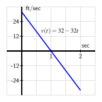

Activity 4.1.3.
A ball is tossed vertically in such a way that its velocity function is given by \(v(t) = 32 - 32t\text{,}\) where \(t\) is measured in seconds and \(v\) in feet per second. Assume that this function is valid for \(0 \le t \le 2\text{.}\)
(a)
For what values of \(t\) is the velocity of the ball positive? What does this tell you about the motion of the ball on this interval of time values?
(b)
(c)
Compute the value of \(s(1) - s(\frac{1}{2})\text{.}\) What is the meaning of the value you find?
(d)
Using the graph of \(y = v(t)\) provided in the following figure, find the exact area of the region between the velocity curve and the \(t\)-axis between \(t = \frac{1}{2}\) and \(t = 1\text{.}\) What is the meaning of the value you find?

(e)
Answer the same questions as in (c) and (d) but instead using the interval \([0,1]\text{.}\)
(f)
What is the value of \(s(2) - s(0)\text{?}\) What does this result tell you about the flight of the ball? How is this value connected to the provided graph of \(y = v(t)\text{?}\) Explain.